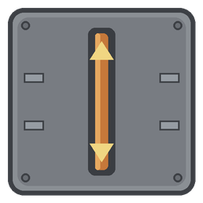
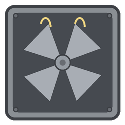
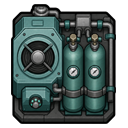
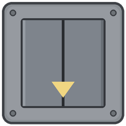
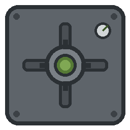

Version 3 complete — dig down, build up, breathe deep
Carve rock under your colony, frame a roof deck above it, and treat every floor as one settlement. Colonists commute for work, food, rest, hauling, medicine, and rituals. Power, smoke, and (optionally) pipes follow the shafts with them. V3 hardens that column — see-through decks, cross-level combat and construction, and Odyssey gravship stacks that actually stay linked through launch and land.
Player-facing highlights. Engineering checklist: V3 complete.
Look through open sky and see-through roof deck into the map below — terrain, buildings, live pawns and projectiles. Click-select, double-click select-similar, forbidden overlays, and float menus work on what you can see. A+ weather syncs from the floor underneath.
Pawns, turrets, and mortars can fire through open shafts and sky holes. Auto-engage keeps decks and underfloors in the fight without hopping maps by hand.
Prioritize / construct when steel or wood only exists on another linked stockpile. Pawns walk the stairs, haul, and deliver — including Ideology gates and turret history. Work relay defaults on.
Combined resources (default on) sum linked stockpiles for the readout and build menu. Install minified buildings onto blueprints on other floors. Medical beds and rest can pin across the stack.
Ship-only stairwells open A+/B+ pockets that travel on launch and reattach on landing. Stable shaft IDs, travel entitlement toggle, cargo pack/place, land polish, and pilot the ship from a linked underdeck.
Mental breaks and raiders chase through shafts. Visitors use stairs. Depth-dim slider for upper decks. Fault guards auto-kill broken subsystems. Native cavern biome when Biomes! Caverns is absent.
Everything V2 already delivered — still the core of every Strata colony.
Research digging down, build an excavated stairwell, open a full-size rock level under your map. Deeper floors need deep excavation. Second shafts join the same level.
Research building up, frame a tower stairwell, open outdoor Level +N as a roof deck — walk and build where the floor below is roofed. Expand roofs downstairs to grow the deck.
Smoke, deep gas, O₂, and CO₂ share one sim (optional; gases default off for performance). Vent, pipe, or exchange through shafts. Overlay in play settings. Performance mode and vacant-level throttle keep tall colonies playable.
Shoring, gas airlocks, ore hoists, fungus farms, sump pumps, mine lamps, bellows, lime scrubbers — plus a deep-gas well and smokeless generator.
World sites: sunken ruins, collapsed mines, sealed vaults, geothermal vents. At home: cave breakthroughs, gas firestorms, flood seeps, rich ore nodes, optional ancient stairwells.
Soft-dep junctions for DBH, DCH, Rimatomics, VHGE, Rimefeller, and VEF chemfuel — meter across levels without merging pipe nets.
Work, food, rest, medical, joy, schedule, storage priority, construction pull, ritual escorts, caravan pull, raid pursuit — across every linked floor.
Strata.StrataModderApi for reachable maps and link listeners. Soft bridges for Vehicle Framework roof decks, VGE Chapter 1, ReGrowth underdecks, and sister mods in this series.
The buildings you’ll place first.
Opens B− or A+. Ties power when wired. Seal to stop gas and raiders. Elevators do the same in 1×1 with a power gate on the paid direction.

Optional dedicated tie away from the stair footprint — builds its partner below automatically. Tankless pockets still wake from shaft surplus.

Smoke hole (no research), louvers, exhaust fans, updraft filters, gas pipes. A working outlet keeps a room under harmful smoke.

O₂ / CO₂ pumps, shaft exchangers, canary cages. Medieval bellows and lime scrubbers if you’re not industrial yet. Gravship O₂ reclaimers / tanks when Odyssey is loaded.

Compact powered shafts for the same dig / tower / gravship roles as stairwells — faster transit, smaller footprint.

Cap a vent, burn canisters in the deep-gas generator, or feed Helixien pipes when VHGE is present.
Own Strata tab. Medieval opens floors; industrial keeps them livable.
Strata folder into RimWorld Mods.